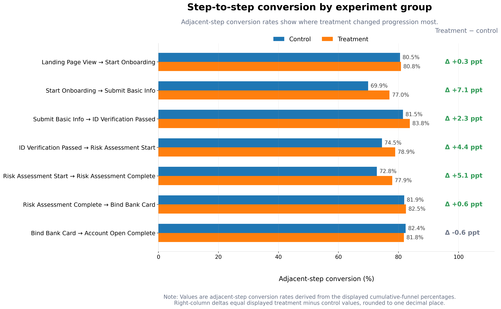

图表
1. Cumulative stage reach

这张图显示的是“从 landing page 起累计走到各阶段的人群占比”，避免把 cumulative funnel 误读成 step-to-step conversion。
2. Step-to-step conversion

这张图专门用于定位 treatment 真正改善了哪些相邻步骤之间的推进效率。
3. Primary and guardrail metrics

主指标与护栏指标分开展示，便于说明“转化提升”并未伴随明显的体验损伤。
4. Channel uplift with CI and sample size

补充样本量、95% CI 和多重比较校正信息后，这张图更接近真实灰度决策会使用的分层评估表达。
5. Treatment effect with exact 95% confidence intervals

不再只写“显著 / 不显著”，而是直接给出精确区间值，方便面试时说明 effect size 和不确定性。